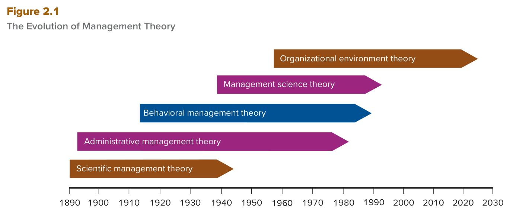

MGT 102 · Chapter 2 · Section 1 of 4:
Scientific Management Theory
Objective LO2-1: Describe how the need to increase organizational efficiency and effectiveness has guided the evolution of management theory.
Objective LO2-2: Explain the principle of job specialization and division of labor, and tell why the study of person–task relationships is central to the
pursuit of increased efficiency.
The question is: how do we raise the efficiency and effectiveness of an organization? (Both words come from lesson 1 of Chapter 1.) Every theory in this chapter came out as an answer to that question, and each one focused on something different: first the task, then the structure, then the people, then the numbers, and last the external environment.
This is the first section: Scientific Management Theory — the oldest theory and the first bar on the timeline. It has only three names in it, but the exam loves to swap them: Adam Smith, Frederick W. Taylor, and the Gilbreths. If you can tell them apart, you own the whole section.
And because this first section also carries LO2-1, it holds the map of the whole chapter (Figure 2.1) —
learn the order of the five theories from here, because that question comes word for word.
The book walks through the chapter in this order:
At the end of the chapter you will also understand how economic, political, and cultural forces (three forces — learn the count) affected the development of these theories, and how managers and their organizations changed their behavior as a result.

This is Figure 2.1: a timeline from 1890 to 2030 with five bars drawn as
arrows, one bar per theory. Figure 2.1 is the book's
chronology of the chapter.
How to read it: read from the bottom up — each higher bar starts later than the one under it.
From the bottom up: Scientific management theory (starts first, around 1890) →
Administrative management theory → Behavioral management theory →
Management science theory (around the 1940s) →
Organizational environment theory (the last one, around the 1960s).
Notice: the only bar that reaches the end of the timeline (2030) is organizational environment theory;
the other bars stop earlier, and the shortest bar is scientific management theory.
What gets asked: "put the theories in date order" · "which theory came first?" → scientific management ·
"which one is the newest?" → organizational environment theory.
The book opens the chapter with a story about Google and its parent company Alphabet. Read it, because the exam may give you a scenario taken from it:
How the book ties it to the chapter: when a company like Google faces a hard problem, many factors are in play — does the solution come from people · processes · technology · reporting relationships? (Four possibilities — learn the count.) And the advantage Google's managers have over a manager a century ago is that they can apply the knowledge gathered by the researchers, consultants and businesspeople who studied management and built and tested theories about "what gets results".
First we examine the so-called classical management theories that emerged around the turn of the 20th century. These include scientific management, which focuses on matching people and tasks to maximize efficiency, and administrative management, which focuses on identifying the principles that will lead to the creation of the most efficient system of organization and management. Next we consider behavioral management theories, developed both before and after World War II; these focus on how managers should lead and control their workforces to increase performance. Then we discuss management science theory, which developed during World War II and has become increasingly important as researchers have developed rigorous analytical and quantitative techniques to help managers measure and control organizational performance.
You will also understand how economic, political, and cultural forces have affected the development of these theories and how managers and their organizations have changed their behavior as a result.
Modern management began to develop in the closing decades of the 19th century, after the Industrial Revolution had swept through Europe and America. In the new economic climate, managers of all types of organizations — political, educational, and economic — were trying to find better ways to satisfy customers' needs.
What exactly changed? The introduction of steam power and the development of sophisticated machinery and equipment changed how goods were produced, particularly in the weaving and clothing industries.
The result: crafts production — small workshops run by skilled workers who made hand-manufactured products — began to be replaced by large factories with sophisticated machines controlled by hundreds or even thousands of unskilled or semiskilled workers.
The book's example: raw cotton and wool, which families or whole villages used to spin into yarn by hand, were now shipped to factories where workers operated machines that spun and wove large quantities of yarn into cloth.
And the problem: the owners and managers of the new factories found themselves unprepared for the challenges. Moreover, many managers and supervisors were engineers who had only a technical orientation — so they were not ready for the social problems that occur when many people work together in a factory. So they started looking for new techniques, and soon they focused on raising the efficiency of the worker–task mix.
At the start, management theorists cared about one question: why were the new factories more efficient and more productive than the older crafts-style operations?
Adam Smith — a famous economist, and one of the first writers to investigate the advantages of producing goods and services in factories. He journeyed around England in the 1700s studying the effects of the Industrial Revolution — that is nearly 200 years before the management theorists. Learn this, because the trap turns it around.
In a study of factories that produced various pins or nails, Smith identified two manufacturing methods:
The result — numbers that are asked word for word:
| Method | What the worker does | Output |
|---|---|---|
| Specialized | one or a few of the 18 tasks | 10 workers → 48,000 pins a day |
| Crafts-style | all 18 tasks | only a few thousand |
Smith's explanation: the workers who specialized became much more skilled at their specific tasks, and as a group they could produce faster. His conclusion: raising the level of job specialization improves efficiency and leads to higher organizational performance.
job specialization — The process by which a division of labor occurs as different workers specialize in different tasks over time.
After Smith's observations, other managers and researchers began to investigate how to improve job specialization to increase performance, and they focused on how the manager should organize and control the work process to maximize the advantages of specialization and the division of labor. This is exactly where Taylor's work starts.
Nearly 200 years before, Adam Smith had been one of the first writers to investigate the advantages associated with producing goods and services in factories. In a study of factories that produced various pins or nails, Smith identified two different manufacturing methods. The first was similar to crafts-style production, in which each worker was responsible for all the 18 tasks involved in producing a pin. The other had each worker performing only one or a few of these 18 tasks. Smith found that 10 workers specializing in a particular task could make 48,000 pins a day, whereas those workers who performed all the tasks could make only a few thousand.
Smith concluded that increasing the level of job specialization—the process by which a division of labor occurs as different workers specialize in tasks—improves efficiency and leads to higher organizational performance.
Frederick W. Taylor (1856–1915) is best known for defining the techniques of scientific management. He was a manufacturing manager, and he later became a consultant who taught other managers how to apply his techniques.
scientific management — The systematic study of relationships between people and tasks for the purpose of redesigning the work process to increase efficiency.
His logic: if the amount of time and effort each worker expends to produce a unit of output (a finished good or service) can be reduced by increasing specialization and the division of labor, the production process becomes more efficient.
And his main point — a sentence the exam loves: the way to create the most efficient division of labor could best be determined by scientific management techniques rather than by intuitive or informal, rule-of-thumb knowledge.
Based on his experiments and observations as a manufacturing manager in a variety of settings, he developed four principles to increase efficiency in the workplace.
| # | The principle, in the book's own words | What it means, in short |
|---|---|---|
| 1 | Study the way workers perform their tasks, gather all the informal job knowledge that workers possess, and experiment with ways of improving how tasks are performed. | Study and test. Watch how workers do their tasks, gather all the informal knowledge they hold, and experiment with ways of improving it. |
| 2 | Codify the new methods of performing tasks into written rules and standard operating procedures. | Codify and write it down. Turn the new methods into written rules and standard operating procedures. |
| 3 | Carefully select workers who possess skills and abilities that match the needs of the task, and train them to perform the task according to the established rules and procedures. | Select and train. Carefully pick the workers whose skills and abilities match what the task needs, and train them according to the established rules and procedures. |
| 4 | Establish a fair or acceptable level of performance for a task, and then develop a pay system that rewards performance above the acceptable level. | Set a level and reward above it. Set a fair or acceptable level of performance, then build a pay system that rewards performance above that level. |
And here, inside Principle 1, comes the most famous tool in the whole section:
time-and-motion study — the careful timing and recording of the actions taken to perform a particular task.
Detail of Principle 1:
Detail of Principle 2: once the best method for a task was determined, it had to be recorded so that the procedure could be taught to all workers performing the same task. This further standardized and simplified jobs — made them even more routine — and so efficiency could be increased throughout the whole organization.
Detail of Principle 3 — careful, there is a trap here: the worker had to understand the tasks and be thoroughly trained to perform them at the required level. A worker who could not be trained to this level was to be transferred to another job where he could reach the minimum required level of proficiency. Transferred, not fired.
Detail of Principle 4: Taylor wanted to give the worker an incentive to reveal the most efficient techniques for performing a task. He also wanted to encourage the worker to perform at a high level of efficiency. So he advocated that workers benefit from any gains in performance: they should be paid a bonus and receive some percentage of the performance gains achieved through the more efficient work process.
Frederick W. Taylor (1856–1915) is best known for defining the techniques of scientific management, the systematic study of relationships between people and tasks for the purpose of redesigning the work process to increase efficiency. According to Taylor, the way to create the most efficient division of labor could best be determined by scientific management techniques rather than by intuitive or informal, rule-of-thumb knowledge. Based on his experiments and observations as a manufacturing manager in a variety of settings, he developed four principles to increase efficiency in the workplace:
Principle 1: Study the way workers perform their tasks, gather all the informal job knowledge that
workers possess, and experiment with ways of improving how tasks are performed.
Principle 2: Codify the new methods of performing tasks into written rules and standard operating
procedures.
Principle 3: Carefully select workers who possess skills and abilities that match the needs of the task,
and train them to perform the task according to the established rules and procedures.
Principle 4: Establish a fair or acceptable level of performance for a task, and then develop a pay
system that rewards performance above the acceptable level.
One of the main tools he used was a time-and-motion study, which involves the careful timing and recording of the actions taken to perform a particular task. Workers who could not be trained to this level were to be transferred to a job where they were able to reach the minimum required level of proficiency.
By 1910, Taylor's system had become nationally known, and in many cases it was practiced faithfully and fully. However, managers in many organizations chose to implement the principles selectively — and this is what caused the problems:
The result in the book's words: scientific management brought many workers more hardship than gain and a distrust of managers who did not seem to care about workers' well-being.
And the workers' reaction: they resisted the new techniques, and at times they even withheld their job knowledge from managers to protect their jobs and pay. It is not hard for workers to conceal the true potential efficiency of a work system. The book's example: experienced machine operators can slow their machines in undetectable ways — by adjusting the tension in the belts or by misaligning the gears.
Unable to inspire workers to accept the new techniques, some organizations increased the mechanization of the work process:
From a performance point of view, the book says the combination of two management practices makes sense:
Together they produce huge cost savings and dramatic output increases in large, organized work settings.
By 1910 Taylor's system of scientific management had become nationally known and in many instances was faithfully and fully practiced. However, managers in many organizations chose to implement the new principles of scientific management selectively. This decision ultimately resulted in problems. For example, some managers using scientific management obtained increases in performance, but rather than sharing performance gains with workers through bonuses, as Taylor had advocated, they simply increased the amount of work that each worker was expected to do.
Scientific management brought many workers more hardship than gain and a distrust of managers who did not seem to care about workers' well-being. One reason Henry Ford introduced moving conveyor belts in his factory was the realization that when a conveyor belt controls the pace of work, workers can be pushed to perform at higher levels. For example, in 1908 managers at the Franklin Motor Company using scientific management principles redesigned the work process, and the output of cars increased from 100 cars a month to 45 cars a day; workers' wages, however, increased by only 90%.
Frank Gilbreth (1868–1924) and Lillian Gilbreth (1878–1972) were two prominent followers of Taylor. They refined Taylor's analysis of work movements and made many contributions to time-and-motion study.
Their three aims — learn the count and the order:
Their method: they often filmed a worker performing a task and then separated the task actions frame by frame into their component movements. The goal was to maximize the efficiency of each task so that the gains add up across tasks into enormous savings of time and effort.
The light side: their attempts were captured — at times quite humorously — in the movie Cheaper by the Dozen, and a new version of it appeared in 2003. It depicts how the Gilbreths — with their 12 children — tried to live their own lives according to these efficiency principles and apply them to daily actions such as shaving, cooking, and even raising a family. The book's photo caption on the movie shows how "efficient families" like the Gilbreths use formal family courts to solve problems, such as assigning chores to different family members.
Eventually the Gilbreths became increasingly interested in the study of fatigue. They studied how the physical characteristics of the workplace contribute to job stress that often leads to fatigue and thus to poor performance.
They isolated four factors that result in worker fatigue — learn them as they are:
| # | Factor | In Arabic |
|---|---|---|
| 1 | lighting | الإضاءة |
| 2 | heating | التدفئة |
| 3 | the color of walls | لون الجدران |
| 4 | the design of tools and machines | تصميم الأدوات والآلات |
Their pioneering studies paved the way for new advances in management theory.
The summary of how scientific management affected practice — the book closes the section with it:
Two prominent followers of Taylor were Frank Gilbreth (1868–1924) and Lillian Gilbreth (1878–1972), who refined Taylor's analysis of work movements and made many contributions to time-and-motion study. Their aims were to (1) analyze every individual action necessary to perform a particular task and break it into each of its component actions, (2) find better ways to perform each component action, and (3) reorganize each of the component actions so that the action as a whole could be performed more efficiently—at less cost in time and effort.
Eventually, the Gilbreths became increasingly interested in the study of fatigue. They isolated factors that result in worker fatigue, such as lighting, heating, the color of walls, and the design of tools and machines. In comparison with the old crafts system, jobs in the new system were more repetitive, boring, and monotonous as a result of the application of scientific management principles, and workers became increasingly dissatisfied.
The questions are in English because the exam is in English. Answer first, then open the solution. If you miss question 1 or 5, go back to the trap "Smith vs. Taylor vs. the Gilbreths".
A. This is Adam Smith's study word for word, and it is the book's example of job specialization — "the process by which a division of labor occurs". The trap is in C: the word "study" pulls you to time-and-motion study, but that is Taylor's tool (Principle 1) and it measures time and movement, not a comparison between two manufacturing methods. And B and D are order traps: bureaucracy and administrative management are in section 2 of the chapter and have nothing to do with the pin factory.
C. Arranging positions in a hierarchy is Weber's Principle 4 from the five principles of bureaucracy — from section 2, not from Taylor's principles. The trap here is double: the question uses NOT, and A, B and D are all correct Taylor principles (2, 4 and 1 in order) so that you rush and pick one of them. Remember the counts: Taylor 4 · Weber 5 · Fayol 14.
B. The figure is a timeline from 1890 to 2030, and the bars are ordered from the bottom up by their starting date: scientific management (the oldest, around 1890) → administrative → behavioral → management science → organizational environment (the newest, around the 1960s, and the only bar that reaches the end of the timeline at 2030). The trap is in A: behavioral is third, not first. C is wrong because each bar starts at a different date — that is the whole idea of the figure. And D is wrong twice: management science starts around the 1940s, and the only bar that starts at 1890 is scientific management.
C. The book is explicit: "Workers who could not be trained to this level were to be transferred to a job where they were able to reach the minimum required level of proficiency" — transferred, not fired. The trap in A is the most common one on this principle. B is a mixing trap: the bonus is Principle 4 and it comes for performance above the acceptable level, not for a worker who never reached the level. And D is a name trap: filming frame by frame is the Gilbreths' method, not the content of the third principle.
C. The first part is the Gilbreths' three aims word for word (break it down → find a better way → reorganize), and the second part is the four causes of fatigue they isolated. The trap in A: Smith is in the same section, but his work was an economic observation on a pin factory — he filmed nothing and studied no fatigue. And B and D are name traps from section 2 — Weber for bureaucracy and Fayol for the 14 principles, and neither of them studies movement. And careful: the Gilbreths refined the time-and-motion study; they did not invent it.
| Term | What it means | Watch out for |
|---|---|---|
| Job specialization | The process by which a division of labor occurs as different workers specialize in different tasks over time | it comes from Adam Smith, not Taylor |
| Division of labor | The splitting of the work itself among different workers | it is the result that occurs through specialization — both are in one definition |
| Crafts production | Small workshops run by skilled workers who make hand-manufactured products | small + skilled + hand-made — the opposite of a factory |
| Industrial Revolution | The change that swept Europe and America and replaced crafts production with large factories | the background — steam power and the weaving and clothing industries |
| Worker–task mix | The match between the worker and the task, which managers first tried to make more efficient | the first thing managers focused on — and the heart of LO2-2 |
| Scientific management | The systematic study of relationships between people and tasks for the purpose of redesigning the work process to increase efficiency | systematic study + redesigning the work process — 4 principles |
| Frederick W. Taylor | The man best known for defining the techniques of scientific management (1856–1915) | a manufacturing manager, then a consultant — the owner of the four principles |
| Adam Smith | The economist who studied the pin factories and concluded that specialization improves efficiency | an economist, the 1700s, nearly 200 years before — the pin study |
| Unit of output | A finished good or service | a good or a service — not only a physical product |
| Rule-of-thumb knowledge | Intuitive or informal knowledge based on general experience | this is what Taylor said no to — a choice that gives it to him is the opposite of his words |
| Time-and-motion study | The careful timing and recording of the actions taken to perform a particular task | a tool from Principle 1 — the Gilbreths only refined it |
| Standard operating procedures | The written rules that hold the best method for a task | written instructions — Principle 2 |
| Transferred | Moved to another job where the worker can reach the minimum required proficiency | Principle 3: transferred — not fired |
| Bonus | Extra pay plus a percentage of the performance gains | Principle 4: for performance above the acceptable level |
| Selective implementation | Applying only some of the principles and dropping the rest | the cause of all the problems of scientific management — not the principles themselves |
| Mechanization / moving conveyor belts | Letting machines, not workers, control the work | Henry Ford — the belt controls the pace of work |
| Frank & Lillian Gilbreth | Two prominent followers of Taylor who refined his analysis of work movements | 3 aims · 12 children · filming frame by frame |
| Fatigue | The tiredness that comes from job stress and leads to poor performance | 4 causes: lighting · heating · the color of walls · the design of tools and machines |
| Classical management theories | The theories that emerged around the turn of the 20th century | only two: scientific + administrative — behavioral is not one of them |
| Administrative management | Identifying the principles that create the most efficient system of organization and management | mentioned here only as part of the chapter map — the detail is in section 2 |
| Behavioral management theories | How managers should lead and control their workforces to increase performance | before and after World War II — section 3 |
| Management science theory | Rigorous analytical and quantitative techniques that help managers measure and control performance | during World War II — not the 1960s |
| Organizational environment theory | How the external environment affects the organization and the manager | the newest in Figure 2.1 — the only bar that reaches the end of the timeline |
These are the general English words on this page, not the management terms. Learn them and the textbook gets much easier to read.
| Word | Part of speech | العربية | Example sentence from this lesson |
|---|---|---|---|
| adaptable | adjective | قابل للتكيّفيعني يقدر يغيّر نفسه ويتعوّد على أي وضع جديد بسرعة | Productivity dipped at first and then improved, which suggests employees are adaptable. |
| advocate | verb | يدعو لـ / يناصريعني تدافع عن فكرة وتقول لازم نسويها | Taylor advocated that workers benefit from any gains in performance. |
| chronology | noun | تسلسل زمنييعني ترتيب الأشياء حسب تاريخها، الأقدم أول | Figure 2.1 is the book's chronology of the chapter. |
| codify | verb | يقنّن / يحوّل لقواعديعني تاخذ طريقة شغل وتكتبها قواعد رسمية يمشي عليها الكل | Codify the new methods of performing tasks into written rules and standard operating procedures. |
| component | adjective | مكوّن / جزءيعني الجزء الصغير اللي يتركب منه الشي الكبير | Analyze every individual action and break it into each of its component actions. |
| conceal | verb | يخبّي / يستريعني تخلي الشي مخفي عن الناس عشان ما يعرفونه | It is not hard for workers to conceal the true potential efficiency of a work system. |
| dissatisfied | adjective | غير راضييعني مو مرتاح ولا عاجبه الوضع | The specialized, simplified jobs were monotonous and repetitive, so many workers became dissatisfied with their jobs. |
| distrust | noun | عدم ثقةيعني ما تثق فيه ولا تصدّقه | Scientific management brought many workers more hardship than gain and a distrust of managers. |
| emerge | verb | يظهر / يطلعيعني يبدأ يبيّن ويوجد بعد ما كان مو موجود | The classical management theories emerged around the turn of the 20th century. |
| experiment | verb | يجرّبيعني تجرّب طرق مختلفة وتشوف أيها يطلع أحسن | Study the way workers perform their tasks and experiment with ways of improving how tasks are performed. |
| hardship | noun | مشقّة / تعبيعني ظرف صعب يتعب الواحد ويضيّق عليه | Scientific management brought many workers more hardship than gain. |
| incentive | noun | حافزيعني شي يشجّعك تسوي الشغل، زي مكافأة أو مكسب | Taylor wanted to give the worker an incentive to reveal the most efficient techniques for performing a task. |
| investigate | verb | يبحث / يتحققيعني تدرس الموضوع عشان تعرف حقيقته | Adam Smith was one of the first writers to investigate the advantages of producing goods and services in factories. |
| isolate | verb | يعزل / يحدد بالضبطيعني تفصل الشي لحاله عشان تعرف تأثيره | The Gilbreths isolated four factors that result in worker fatigue. |
| monotonous | adjective | رتيب / ممليعني نفس الشي يتكرر بدون تغيير، يقتل الملل | The specialized, simplified jobs were often monotonous and repetitive. |
| pace | noun | إيقاع / سرعةيعني سرعة الشغل، هل هو سريع ولا على راحته | When a conveyor belt controls the pace of work, workers can be pushed to perform at higher levels. |
| proficiency | noun | إتقان / كفاءةيعني مستوى مهارتك في الشغل، قد إيش تسويه عدل | A worker who could not be trained was transferred to another job where he could reach the minimum required level of proficiency. |
| prominent | adjective | بارز / مشهوريعني معروف وله مكانة، الناس تعرفه | Frank Gilbreth and Lillian Gilbreth were two prominent followers of Taylor. |
| pursuit | noun | السعي / الملاحقةيعني إنك تمشي وراء الشي وتشتغل عشان توصله | The study of person–task relationships is central to the pursuit of increased efficiency. |
| refine | verb | ينقّح / يحسّنيعني تاخذ شي موجود وتصلّح تفاصيله عشان يصير أدق | The Gilbreths refined Taylor's analysis of work movements. |
| repetitive | adjective | متكرريعني تسوي نفس الحركة مرة ورا مرة | Jobs in the new system became more repetitive, boring, and monotonous. |
| resist | verb | يقاوم / يعانديعني ترفض الشي وتقف ضده | The workers resisted the new techniques and at times withheld their job knowledge from managers. |
| rigorous | adjective | صارم / دقيقيعني دقيق وصعب وما يترك فراغ، مو كلام عام | Researchers built rigorous analytical and quantitative techniques that help managers measure and control performance. |
| selectively | adverb | بشكل انتقائييعني تاخذ اللي يعجبك بس وتترك الباقي | Managers in many organizations chose to implement the principles selectively. |
| sophisticated | adjective | متطور / معقّديعني متقدّم وفيه تفاصيل كثيرة، مو بسيط | The development of sophisticated machinery and equipment changed how goods were produced. |
| systematic | adjective | منهجي / منظّميعني على خطوات مرتبة وبنظام، مو عشوائي | Scientific management is the systematic study of relationships between people and tasks. |
| unprepared | adjective | غير مستعديعني ما جهّز نفسه ولا يعرف كيف يتعامل | The owners and managers of the new factories found themselves unprepared for the challenges. |
| withhold | verb | يحجب / يمنعيعني تمسك المعلومة أو الشي وما تعطيه | At times workers even withheld their job knowledge from managers to protect their jobs and pay. |
Built from the text of the textbook Contemporary Management 12e (Jones & George, McGraw Hill) —
Chapter 2: The Evolution of Management Thought, the Overview section and the
Scientific Management Theory section (its parts: Job Specialization and the Division of Labor ·
F. W. Taylor and Scientific Management · The Gilbreths),
objectives LO2-1 and LO2-2 (pages 33–38), with the book's Summary and Review
and Figure 2.1.
Summarized only: the opening box A Manager's Challenge — Google Searches for the Best Way to Work
is taken by its main points, and the book's photo captions (the Frederick W. Taylor photo and the Cheaper by the Dozen movie still) are
summarized in one line. The other theories in Figure 2.1 — administrative, behavioral, management science
and organizational environment — appear here as a map only, and their detail is in sections 2, 3 and 4.